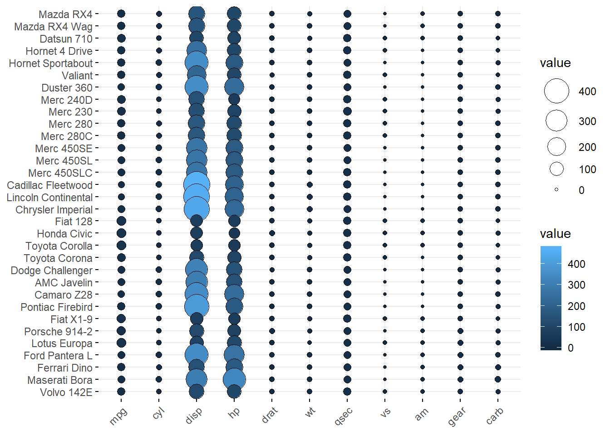
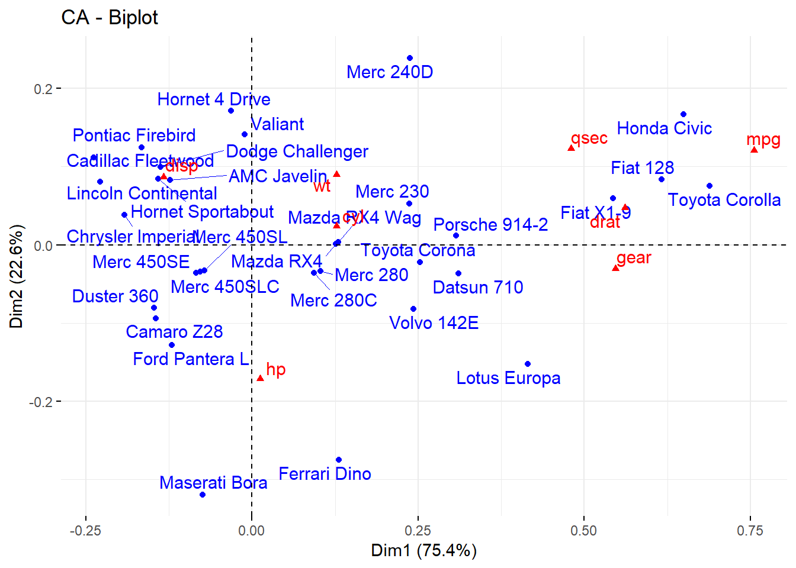

Cap 3 Barras com duas variáveis
Para que serve: O gráfico de barras é uma maneira de resumir a informação de duas ou mais variáveis qualitativas.
par(bg="#fdf6e3")
load(url("https://raw.githubusercontent.com/DATAUNIRIO/Base_de_dados/master/Titanic.RData"))
#legenda
nomes = levels(Titanic$Classe)
nomes## [1] "Tripulação" "Primeira" "Segunda" "Terceira"# percentual da linha ou da coluna
#porcent = prop.table(bartable)*100 # percentual do total
#porcentlinha = prop.table(bartable,1)*100 # percentual da linha
#porcentcoluna = prop.table(bartable,1)*100 # percentual da coluna
bartable = table(Titanic$Classe, Titanic$Sobreviveu) ## get the cross tab
porcentlinha = round(prop.table(bartable,1)*100,1) # percentual da linha arrendondada para uma casa decimal
# Método simples
rotulo=paste(porcentlinha)
barras<-barplot(bartable, beside = TRUE, legend = levels(unique(Titanic$Classe)),col=c("black","skyblue","royalblue","darkblue")) ## plot
text(barras, 0, rotulo,cex=1,pos=3, col ="#ffffff")par(bg="#fdf6e3")
# Customização
rotulo2=paste(nomes,"\n (",porcentlinha,"%",")",sep="")
barras2<-barplot(bartable, beside = TRUE, legend = levels(unique(Titanic$Classe)),col=c("black","skyblue","royalblue","darkblue")) ## plot
text(barras2, 2, rotulo2,cex=0.8,pos=4, srt=90,col ="#ffffff")barras3<-barplot(bartable, legend = levels(unique(Titanic$Classe)),col=c("black","skyblue","royalblue","darkblue"))3.1 Barras no ggplot2
library(ggplot2)
library(reshape2)
x <- c(5,17,31,9,17,10,30,28,16,29,14,34)
y <- c(1,2,3,4,5,6,7,8,9,10,11,12)
day <- c(1,2,3,4,5,6,7,8,9,10,11,12)
df1 <- data.frame(x, y, day)
df2 <- melt(df1, id.vars='day')
ggplot(df2, aes(x=day, y=value, fill=variable)) +
geom_bar(stat='identity', position='dodge')
3.2 Barras “lado a lado” no ggplot2
library("ggplot2")
library("reshape")
x <- c(5,17,31,9,17,10,30,28,16,29,14,34)
y <- c(1,2,3,4,5,6,7,8,9,10,11,12)
day <- c(1,2,3,4,5,6,7,8,9,10,11,12)
df1 <- data.frame(x,y,day)
df2 <- reshape::melt(df1, id = c("day"))
ggplot(data = df2, aes(x = day, y = value, fill = variable)) +
geom_bar(stat = "identity")+ facet_wrap(~ variable) +
scale_x_continuous(breaks=seq(1,12,2))library("ggplot2")
library("reshape")
x <- c(5,17,31,9,17,10,30,28,16,29,14,34)
y <- c(1,2,3,4,5,6,7,8,9,10,11,12)
day <- c(1,2,3,4,5,6,7,8,9,10,11,12)
df1 <- data.frame(x,y,day)
df2 <- reshape::melt(df1, id = c("day"))
ggplot(data = df2, aes(x = day, y = value, fill = day)) +
geom_bar(stat = "identity") +
facet_wrap(~ variable) +
scale_x_continuous(breaks=seq(1,12,2))library(dplyr)
avg_mpg <- mtcars %>%
group_by(cyl, am) %>%
summarise(mpg = mean(mpg, na.rm = TRUE))
p1 <- ggplot(avg_mpg, aes(factor(cyl), mpg, fill = factor(am))) +
geom_bar(stat = "identity", position = "dodge") +
ggtitle("Default color comparison")library(dplyr)
avg_mpg <- mtcars %>%
group_by(cyl, am) %>%
summarise(mpg = mean(mpg, na.rm = TRUE))
# more pleasing colors
p2 <- ggplot(avg_mpg, aes(factor(cyl), mpg, fill = factor(am))) +
geom_bar(stat = "identity", position = "dodge", color = "grey40") +
scale_fill_brewer(palette = "Pastel1") +
ggtitle("Adjusted color comparison")
grid.arrange(p1, p2, ncol = 2)library(dplyr)
avg_mpg <- mtcars %>%
group_by(cyl, am) %>%
summarise(mpg = mean(mpg, na.rm = TRUE))
p3 <- ggplot(avg_mpg, aes(factor(cyl), mpg, fill = factor(am))) +
geom_bar(stat = "identity")
p3p1 <- ggplot(mtcars, aes(reorder(row.names(mtcars), mpg), mpg)) +
geom_bar(stat = "identity") +
coord_flip() +
geom_text(aes(label = mpg), nudge_y = 2)
p2 <- ggplot(mtcars, aes(reorder(row.names(mtcars), mpg), mpg)) +
geom_bar(stat = "identity") +
coord_flip() +
geom_text(aes(label = mpg), nudge_y = -2, color = "white")
grid.arrange(p1, p2, ncol = 2)p1 <- ggplot(avg_mpg, aes(factor(cyl), mpg, fill = factor(am))) +
geom_bar(stat = "identity", position = "dodge") +
geom_text(aes(label = round(mpg, 1)), position = position_dodge(0.9)) +
ggtitle("Fig A: Default text alignment")
p2 <- ggplot(avg_mpg, aes(factor(cyl), mpg, fill = factor(am))) +
geom_bar(stat = "identity", position = "dodge") +
geom_text(aes(label = round(mpg, 1)), position = position_dodge(0.9),
vjust = 1.5, color = "white") +
ggtitle("Fig B: Adjusted text alignment")
grid.arrange(p1, p2, ncol = 2)# compare mpg across all cars and color based on cyl
p1 <- ggplot(mtcars, aes(x = reorder(row.names(mtcars), mpg), y = mpg, fill = factor(cyl))) +
geom_bar(stat = "identity") +
coord_flip() +
theme_minimal() +
ggtitle("Fig. A: Default fill colors")
p1p2 <- ggplot(mtcars, aes(x = reorder(row.names(mtcars), mpg), y = mpg, fill = factor(cyl))) +
scale_fill_manual(values = c("#e5f5e0", "#a1d99b", "#31a354")) +
geom_bar(stat = "identity") +
coord_flip() +
theme_minimal() +
ggtitle("Fig. B: Manually set fill colors")
p2
3.3 create label location for each proportional bar
# create label location for each proportional bar
proportion <- mtcars %>%
group_by(cyl, am) %>%
tally() %>%
group_by(cyl) %>%
mutate(pct = n / sum(n))
proportion <- proportion %>%
group_by(cyl) %>%
mutate(label_y = cumsum(pct))
p1 <- ggplot(proportion, aes(factor(cyl), pct, fill = factor(am, levels = c(1, 0)))) +
geom_bar(stat = "identity", color = "grey40") +
geom_text(aes(label = round(pct, 2), y = label_y), vjust = 1.5, color = "white") +
scale_fill_manual(values = c("#a1d99b", "#31a354")) +
labs(fill = "AM")
p1
p2 <- ggplot(proportion, aes(factor(cyl), pct, fill = factor(am, levels = c(1, 0)))) +
geom_bar(stat = "identity", position = "dodge", color = "grey40") +
scale_fill_manual(values = c("#a1d99b", "#31a354")) +
geom_text(aes(label = round(pct, 2), y = label_y), position = position_dodge(0.9),
vjust = 1.5, color = "white", family = "Georgia")
p2
p1+ labs(title = "Distribution of Adults by Income in Dayton, OH",
subtitle = "The percentage of adults in the middle class eroded by 5.3% from 2000 to 2014. Although a small \nfraction of these individuals moved into the upper class (+0.5%), the majority of these middle class \nindividuals moved into the lower income class (+4.8%).",
caption = "Source: Pew Research Center analysis of the \n2000 decennial census and 2014 American \nCommunity Survey (IPUMS)") ## Alternativas ao Gráfico de Barras
## Alternativas ao Gráfico de Barras
3.4 MOSAICO
Descrição. Conjunto de retângulo, cada um representa o cruzamento de dois níveis de duas variáveis e o tamanho de cada retângulo é proporcional ao percentual de observações dessa combinação de níveis de variáveis.
# Gráfico de Mosaico ou Mosaicplot
library(RColorBrewer)
par(bg="#fdf6e3")
#display.brewer.all()
COR<-brewer.pal(4,"Dark2")
#COR
# Gráfico de Mosaico ou Mosaicplot
mosaico<-mosaicplot(bartable,col=COR)
3.5 Balloon plot
Balloon plot is an alternative to bar plot for visualizing a large categorical data. We’ll use the function ggballoonplot() [in ggpubr], which draws a graphical matrix of a contingency table, where each cell contains a dot whose size reflects the relative magnitude of the corresponding component.
par(bg="#fdf6e3")
library(ggplot2)
library(ggpubr)
theme_set(theme_pubr())
data("mtcars")
ggballoonplot(mtcars, fill = "value")
COR <- c("#0D0887FF", "#6A00A8FF", "#B12A90FF","#E16462FF", "#FCA636FF", "#F0F921FF")
ggballoonplot(mtcars, fill = "value")+
scale_fill_gradientn(colors = COR)
library(RCurl)
x <- getURL("https://raw.githubusercontent.com/DATAUNIRIO/Base_de_dados/master/Estados.csv")
BaseUF <- read.csv(text=x, header=T, quote="", sep=";",dec = ",")
row.names(BaseUF)<-BaseUF$Estado
BaseUF<-BaseUF[,c(7:15)]
ggballoonplot(BaseUF, fill = "value")
Correspondence analysis
Correspondence analysis can be used to summarize and visualize the information contained in a large contingency table formed by two categorical variables.
Required package: FactoMineR for the analysis and factoextra for the visualization
library(FactoMineR)
library(factoextra)
dt=mtcars[,c(1:7,10)]
res.ca <- CA(dt, graph = FALSE)
fviz_ca_biplot(res.ca, repel = TRUE)